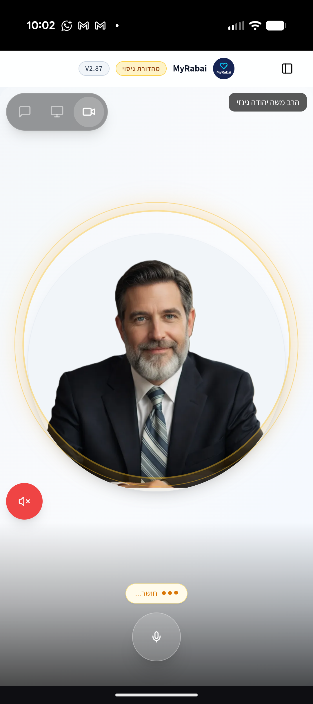
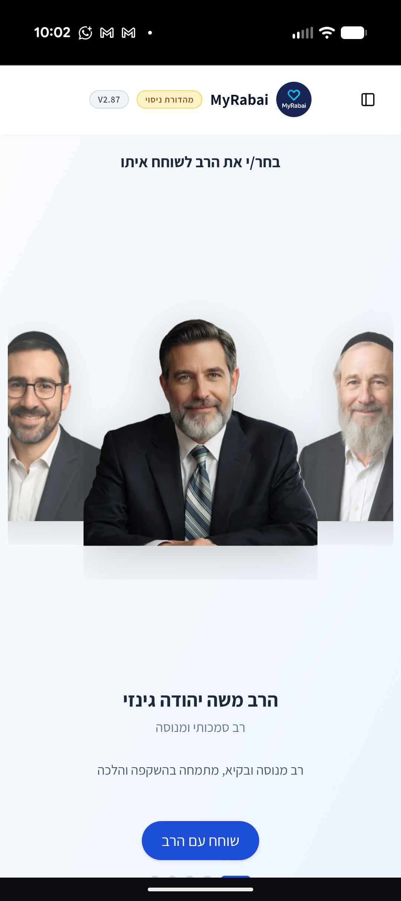

חוויה חדשה של חיבור למקורות. My Rabbi משלב בינה מלאכותית מתקדמת עם עומק אנושי כדי לתת לך מענה אישי, הלכתי ומחשבתי – בכל רגע שבו הלב מבקש בהירות.
עיצבנו עבורך סביבה שקטה, מכבדת ואינטואיטיבית, שבה אפשר פשוט לשאול ולהעמיק.


הנה כמה דוגמאות לשאלות שהקהילה שלנו מעלה, והתשובות שמשנות את זווית הראייה:
המענה שלנו: חינוך הוא לא מלחמה נגד הטכנולוגיה, אלא יצירת אלטרנטיבה מרגשת יותר. הציעו 'זמן איכות ללא פילטרים' – משחק משפחתי, סיפור מרתק או פשוט הקשבה מלאה. כשהילדים יראו שההורים מניחים את הטלפון בצד, הם יבינו שהקשר האנושי הוא האוצר האמיתי.
המענה שלנו: ביהדות זה נקרא 'התבודדות'. קחי לך 5 דקות ביום של שקט מוחלט. דברי עם הבורא בלשונך, או פשוט נשמי עמוק ותזכירי לעצמך: 'השגחה פרטית מלווה אותי'. השקט החיצוני הוא הדרך היחידה לבנות שקט פנימי.
המענה שלנו: ממש לא. 'פשיטא דעביד איניש למזוניה'. החוכמה היא להפוך את העבודה עצמה לעבודת השם – על ידי יושרה, הארת פנים לקולגות והבנה שהפרנסה היא כלי שמאפשר לנו לעשות טוב בעולם.
המענה שלנו: 'עין טובה'. אנחנו נוטים להתרגל לטוב ולהבליט את החסרונות. נסו תרגיל קטן: בכל יום, אמרו אחד לשני דבר אחד טוב שהבחנתם בו. הכרת הטוב היא הדלק ששומר על אש האהבה דולקת.
המענה שלנו: הבינה המלאכותית היא כלי עזר עצום לסיכום והנגשת ידע, אך היא לא מחליפה את פסיקת הרב ושיקול הדעת האנושי. My Rabbi כאן כדי לפתוח לך שער להבנה עמוקה יותר, שתמיד מחוברת לשורשי ההלכה.
ידע המבוסס על התנ"ך, הגמרא, המחשבה וההלכה הצרופה.
דיאלוג זורם ומכבד שמתאים את עצמו לקצב ולצורך שלך.
התייעצות בכל שעה (פרט לשבתות וחגים) – המצפן שלך תמיד איתך.
הצטרפו לאלפי משתמשים שכבר מצאו את המצפן האישי שלהם.